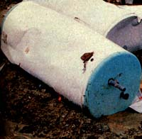
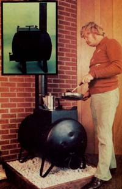
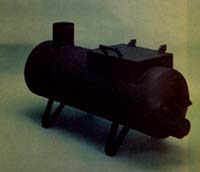
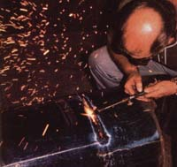
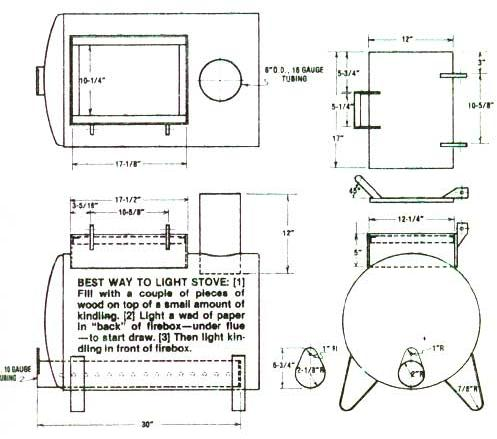

(Note: Since this article was published in 1978, building codes and homeowners insurance rules have changed, and federal rules governing wood stoves have been adopted. This stove design may not comply with various federal and local regulations. Readers are advised to check with appropriate officials before installing this stove in their homes. -Mother)
Most homebuilt wood-burning stoves are scabbed together from old 55-gallon drums. And they more or less do the job they're supposed to do ... despite the fact that they're notoriously inefficient users of fuel, are difficult to regulate, rapidly burn through, and are so ugly that most people will only tolerate them out in the garage or workshop.
Perhaps the single really good thing that can be said for the majority of the 55-gallon-drum burners is that (usually) it doesn't cost very much to put one of them together or at least it didn't used to. Here lately, though, the steel barrels have become increasingly difficult to find ... and, when you do locate one of the containers, it frequently has a seven dollar price tag at fixed to it.
There must be a better way to go about assembling a homemade wood-burning stove. And there is' As MOTHER was recently shown by Wilton, Iowa's Robert Wars (who, incidentally, just happens to be the brother of MOTHER researcher Emerson Smyers).
"Forget about messing around with old 55-gallon drums," Bob told us. "What you want to build your stove out of is a discarded electric water heater tank ... for at least four good reasons:
"In the first place, the walls of such a tank are a minimum of three to four times as thick as the metal in a 55-gallon barrel ... which means that a water heater drum will make a much tougher stove that will last a lot longer.
"Second, when you build a firebox from a junked water heater tank, it's very easy to make the stove as airtight and efficient as any $500 woodburner on the market. And I can't say that about any 55-gallon-drum stove I've ever seen.
"Third, if you construct your heater the way I tell you to, it'll be easy to load, it will have excellent fire and temperature control, and it'll look classy enough to put on display right in the living room.
"And fourth, you can build one of my 'water heater' stoves for even less than most folks now spend putting together a 55gallon-barrel wood-burner. As a matter of fact, I scrounged up everything that went into mine. Which means that the stove cost me only the laborone good long daythat I used building it."
Well, now. Those were pretty big claims. Especially since we were listening to them while looking at some photographs of a flat-out good -looking stove. So, in our best and most devious "backwoods of North Carolina" fashion, we challenged ole Bob to prove everything he'd just told us.
And thenjust to put him at as large a cost disadvantage as we couldwe spit a couple of times, looked at Smyers out of the corner of our eye, and innocently said, "Of course you know, Bob, that a lot of our readers have trouble scavenging up project materials the way you do. So, other than letting you recycle an old water heater tank, we'll just have to make you buy and pay new prices for everything else that goes into any stove you build for us."
"Oh, of course!" Bob answered. And it wasn't so much what he said as the way he said it which told us right then and there that we were the ones who'd been had. Shucks. This Iowa slicker knew from the beginning that he could build a $500 stove and never use more'n $35 worth of materials doing it.
As Bob Smyers drafted his brother, Emerson, and set about the construction of one of his now-famous stoves, it was easy to see that the recycled-into-a-firebox electric water heater tank was the real secret of his wood-burner's low cost. Also its ease of assembly. Heck. Once you've found your "junked but still in good condition" water heater tank, you've already got about three-quarters of your stove "custom made" just the way you want it.
And it really isn't difficult to find one of these tanks, either. Most of the landfills scattered around the country, in fact, are so filled with the containers that we've- developed a sneaking suspicion the old water heaters breed out there. Maybe not ... but there sure are a lot of 'em "out there" for the taking.
Any discarded electric (forget the gas ones for this project) water heater from 30- to 50-gallon capacity will convert nicely into a stove. We've come to think, however, that one of the 30-gallon tanks (with a diameter of 20 inches and a length of 32 inches) makes the best-looking wood-burner of all.
Pick and choose a little from your friendly local landfills, dumps, or the alleyways behind appliance stores until you find just the tank or tanks you want. Then (if you're doing your "shopping" in a landfill or dump) strip off the lightweight sheet metal "wrapper" and insulation right in the field and make sure that the main tank inside isn't rusted out or filled with corrosion. Or, if circumstances dictate, you can do this stripping back home in your shop and then haul the castoff sheet metal and insulation back to the dump when you're ready to discard them.
Click here and here for downloadable construction details.
Anyone with a cutting torch and welder will find the rest easy. And if you don't own or operate such equipment, scout around until you find a competent welding shop that'll convert your tank at a reasonable price.
Lay the container on its side and add legs and the "loading hopper box with hinged lid" as illustrated in the accompanying drawing. Then weld in the "exhaust stack" or "smoke boot" as shown. Make sure that all seams are airtight and that the hoqper box lid fits snugly (airtight) too. he draft control is, perhaps, the most critical part of all. If it's well made and doesn't leak, you'll have good and positive control of your finished stove's blaze and temperature at all times. Conversely, if it isn't well made and it does leak, you won't. Work carefully and do the job right.
Once the stove is completely assembled, paint all its outside surfaces with Rustoleum Bar-B-Q black paint or "high temperature engine paint". You've just built yourself one mighty fine wood-burner! Andeven if you bought everything (approximately 65 pounds of steel) except the recycled water heater tank, you shouldn't have spent more than $35 on the project. (Bob and Emerson built MOTHER's demonstration model in one short daysix hoursfor a total cost of $31.54.)
MOTHER researcher Dennis Burk-holder has been using our original "water heater wood stove" to warm his entire 1,100square-foot house since last fall and he's constantly amazed at the large amount of heat and small amount of ashes the unit produces. He's also been pleasantly surprised by the way the heater holds a fire overnight. "All I do in the morning," says Dennis, "is jar the stove a couple of times, open the draft a bit ... and the ole log-burner snaps right to life."
|
 There's no shortage of old electric water heaters in most of this country's landfills and dumps. MOTHER staffer Clarence Goosen contemplates all the groovy woodburners he'll be able to make from one morning's haul of junked water heater tanks. The sparks fly as Robert Smyers converts an old water heater into a stove. Drawing shows general details of ""water heater tank to wood-burning stove"" conversion. |
 One of many variations of Bob Smyers's basic design ... and (in smaller box) one of the ""cutest"" water tank stoves that MOTHER's experimenters have made. Dennis Burkholder also demonstrates that the large, flat, warp-proof filler lid on his heater tank stove can be wed as a near-ideal cooking surface too. This feature, alone, makes the wood-burner a good ""standby"" to have on hand for any family that might experience utility service disruptions. |
 Click here for a downloadable enlargement of the left side of this illustration. Click here for a downloadable enlargement of the right side of this illustration. |
|
 |
 |
|